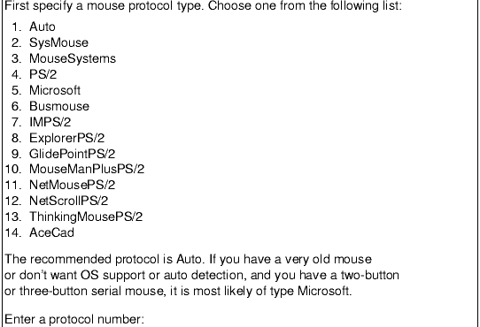
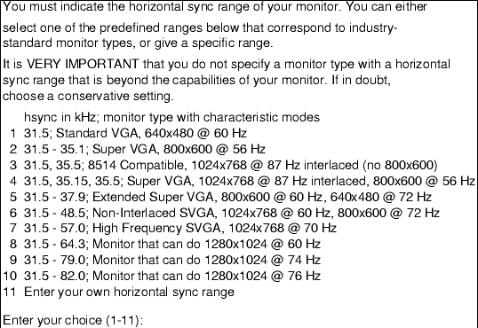
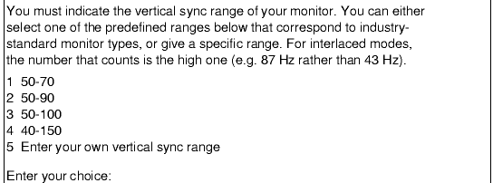
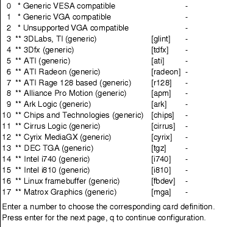

Kiến Thức Cơ Bản Slackware Linux
4.3.1 X Configuration
Hệ thống X Window được coi là hệ thống đồ hoạ tiêu chuẩn
cho người sử dụng(GUI) dưới tất cả các phiên bản Unix
và Linux.Khác với Windows,MacOS,trong Linux và Unix
thì GUI không có gì chung với Nhân của
hệ thống.Nó là phần không phụ thuộc.Điều này
làm cho hệ thống bền hơn.
Bắt đầu từ phiên bản Slackware 10.0 thì X Window
trên Slackware sẽ được thay bằng Xorg.
Để xây dựng X bạn cần có tập tin /etc/X11/xorg.conf.Đấy là
tập tin chứa thông tin về video-card,chuột và màn
hình.Nó là một tập tin cấu hình phức tạp
tuy nhiên may mắn cơ một vài chương trình sử dụng
để tạo nó cho bạn.Chúng ta sẽ làm quen với
chúng ở phần này.
xorgconfig
Hãy chạy xorgconfig,ngay lập tức sẽ có một màn
hình chứa đầy thông tin về xorgconfig,để tiếp tục
hãy nhấn Enter.xorconfig sẽ hỏi bạn về đường dẫn chính
xác.Nó đã được nêu ở trên,hãy
điền vào và Enter.
Mouser Configuration

Bạn hãy chọn chuột của mình từ menu và nhấn
Enter.Nếu bạn không nhìn thấy chuột của bạn trong đó
thì đơn giản hãy chọn Mocrosoft protocol - đó
là dạng chung và chuột sẽ làm việc bình
thường.Sau đó xorgconfig
sẽ hỏi bạn về ChordMiddle và
Emulate3Buttons.Bạn sẽ thấy những hướng dẫn cụ thể trên
màn hình.Sử dụng nó nếu nút thứ ba
không làm việc trên X hoặc bạn có chuột hai
nút(khi đó nhấn hai nút đồng thời sẽ là
nút thư ba).
Tiếp tục hãy chọn tên cho mouse device(thiết bị
chuột).Theo mặc định tên sẽ là /dev/mouse.Tuy nhiên
nếu bạn sử dụng GPM(Linux mouse server)để thay chỗ thì bạn
cần chọn dạng cho thiết bị là: /dev/gpmdatađể
có những thông tin về chuột qua gpm.Trong một vài trường hợp
nó sẽ làm việc tốt hơn những mà chúng
tôi không khuyến khich các bạn sử dụng.
Tiếp đến xorgconfig sẽ hỏi bạn về có thiết lập các
phím đặc biệt hay không.Nếu cần thì hãy chọn
"y".Hầu hết đều chọn "n".
Horizontal Sync

Ở mục này bạn phải chọn bề ngang của màn hình.Bạn
hãy chọn một trong số chúng.Nó rất là quan
trọng khi chọn lựa.Đừng chọn chiều ngang vượt quá giới hạn cho
phép của màn hình.Tuy nhiên nó
không nguy hiểm với các màn hình hiện đại bởi
vì chúng có bộ phận bảo vệ,không cho
phép vượt quá giới hạn.Những màn hình cổ xưa
có thể bị hư hại khi vượt quá mức độ cho phép của
màn hình.Sẽ rất là có lợi nếu bạn có
trong tay tài liệu về màn hình.
Thông thường với các màn hình đương thời
có thể chọn 31.5-48.5 hoặc 31.5-57.0.Nếu ai đó có
màn hình chất lượng cao hơn thì có thể chọn
chiều ngang nhiều hơn.Hoặc bạn có thể nhập vào
thông số của mình nếu chúng không có
trong danh sách.
Vertical Sunc

Đây là phần khai báo chiều cao của màn
hình.Bạn nên tìm nó trong các
tài liệu về máy tính của mình.xorgconfig sẽ
hỏi bạn tên nhận dạng cho màn hình trong
xorg.conf.Hãy điền tên vào.
Video Card

Bây giờ bạn có thể nhìn thấy cơ sở dữ liệu về
video-card.Nếu bạn muốn sử dụng chúng thì hãy
nói "y" và chọn card từ danh sách này.Nếu
bạn không nhìn thấy tên card của mình
thì hãy sử dụng trên các chipset khác
mà nó có thể hoạt động.
Tiếp theo là thông báo số lượng RAM trên
video-card.Ngoài ra xorgconfig
còn muốn bạn điền vào một vài thông tin bổ
sung cho video-card.Nếu bạn thích hãy nhập vào.
Tiếp đến bạn sẽ phải chọn chế độ hiển thị.Bạn có thể chọn theo
mặc định,sau đó có thể soạn thảo lại tập tin /etc/X11/xorg.conf và chọn
1024x768 làm ngầm định.
Cũng thời điểm này xorgconfig sẽ hỏi bạn:có lưu lại tập
tin cấu hình này không.Hãy trả lời "yes"
và kết thúc quá trình cài đặt.Bạn
có thể chạy X ngay bằng starx
xorgsetup
Một phương án thứ hai để xây dựng X là sử dụng
xorgsetup(sử dụng ở chế độ đồ họa).Để bắt đầu hãy chạy:xorgsetup
tuy nhiên chú ý bạn phải chạy bằng root.
#xorgsetup
xorgsetup về bản chất giống như
xorgconfig,nó sẽ hỏi bạn một loạt các câu hỏi về hệ
thống của ban.Hãy nhớ những thông tin bạn có để
xây dựng X.Bản thân xorgsetup chứa rất nhiều thông
tin sẽ giúp đỡ bạn thiết lập cấu hình hệ thống.
Chú ý nếu bạn đã có một tập tin xorgconf ở /etc/X11/xorg.conf thì
chương trình sẽ hỏi bạn xem có lưu nó lại trước
khi bắt đầu.Tập tin gốc sẽ có tên là /etc/X11/xorg.conf.backup.
Biên dịch: Vũ Dũng(vudung@mail.ru)
website:http://khigiacmoquayve.narod.ru
1-9-2005 Voronezh Russian